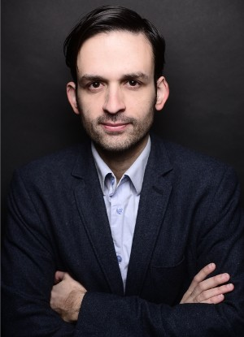
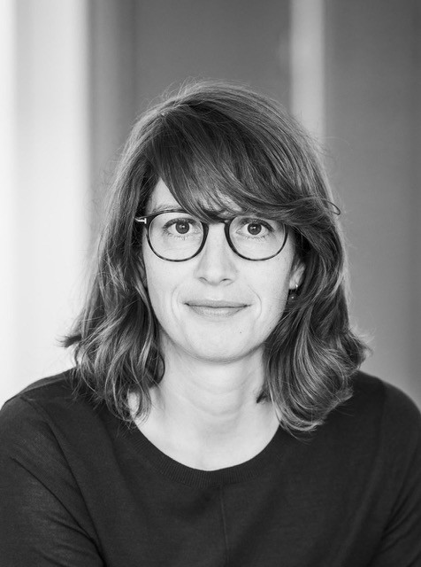
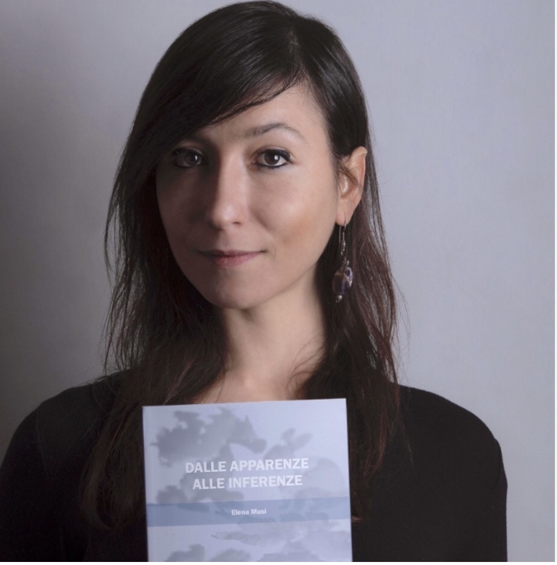
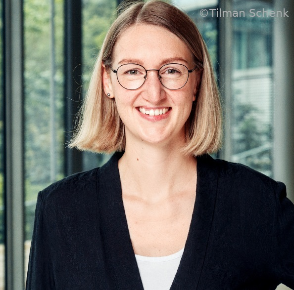

The 13th Workshop on Argument Mining and Reasoning
July 3, 2026 - HYBRID format
Co-located with ACL 2026 in San Diego, United States
June 27th 2026 The workshop program is out.
March 13th 2026 Archival deadline extension from March 12, 2026 to March 16, 2026!
February 24th 2026 Archival deadline extension from March 5, 2026 to March 12, 2026!
February 9th 2026 The 2nd Call for Papers is out!
February 1st 2026 Excited to announce this year's Shared Task on Reconstructing the Reasoning in United Nations Resolution. 🧠🧩
December 5th 2025 The 1st Call for Papers is out!
December 1st 2025 The Call for Shared Tasks is out!
November 21st 2025 The official ArgMining 2026 website is launched.
Argument mining (also known as "argumentation mining") is a well-established research area in computational linguistics that focuses on the automatic identification of argumentative structures, such as premises, conclusions, and inference schemes. Since its beginnings, the focus has been on the development of large-scale argumentation dataset and tasks like argument quality assessment, argument persuasiveness, and the synthesis of argumentative texts, spanning various domains, such as legal, social, medical, political, and scientific settings.
Mirroring the advancements in CL and NLP at large, argument mining has started to work on explainable argumentation, mulitmodal settings, and modeling human label variation. The field has also started to investigate the performance of generative models in producing and analyzing human-like argumentation. The quality of those models depends heavily on the task; for instance, LLMs show strong performance in generating persuasive essay and convincing arguments, but they have shown to fall short in identifying fallacious arguments and reproduce biases inherent in models, requiring substantial fine-tuning efforts to mitigate them. It remains largely unexplored whether LLMs truly possess a deeper understanding of argumentation, or if they are simply effective pattern learners.
The 2026 edition of the ArgMining workshop therefore places a special focus on understanding and evaluating arguments in both human and machine reasoning. With this topic, we broaden the workshop's focus to include reasoning, a long-standing area of research in AI that has recently gained renewed interest within the *ACL community, driven by the latest generation of LLMs. Reasoning is tightly connected to argumentation as it represents, analyzes and evaluates the process of reaching conclusions on the basis of available information. If we consider argumentation as a paradigm to capture reasoning, then machines (particularly LLMs) can be evaluated based on their ability to address argument mining tasks.
The workshop will be co-located with ACL 2026 and held in San Diego, United States in a hybrid format.
Program
The workshop will take place on July 3, 2026. All times are local time.
- 09:00–09:15Opening Remarks
- 09:15–10:30Oral Session 1: Evaluating and Modeling Argument Quality with LLMs (chair: Timon Ziegenbein)
- A Three-Level Audit of LLM Alignment for Argument Quality Assessment
- Topic-Guided Prompting for Argument Stance Classification
- Argument-Based Comparative Question Answering Evaluation Benchmark
- Illustrating Arguments with Images Using Aspect-Aware Prompting
- A Neural Approach to Fine-Grained Argumentation Strategy Classification with Emotion and Moral Value Lexicons across Multiple Domains
- 10:30–11:00Coffee Break
- 11:00–12:00Keynote
- 12:00–14:00Lunch Break
- 14:00–14:30Shared Task Overview, Best System Awards
- 14:30–15:30Panel Discussion
- 15:30–17:00Coffee Break & Poster Session
- Main Workshop Papers
- AMResources: Cataloging Argument Mining Datasets
- STCOR: A Trilevel Syllogism-Driven Reasoning Framework
- Shared Task Papers
- LLM-INSTRUCT at UZH Shared Task 2026: Constraint-Aware Retrieval and Selective Debate for Paragraph-Level Argument Mining
- RESOLVENOW at UZH Shared Task 2026: Rule-Based Type Classification with LLM-Driven Multi-Label Tagging for UN Resolutions
- Argchestrators at UZH Shared Task 2026: Efficient Argument Mining in UN Resolutions: A Sub-8B Pipeline using Agentic Debate and Heuristic Retrieval
- Prompteam at UZH Shared Task 2026: RAG-Augmented Classification and Cosine-Filtered Relation Prediction for UN Resolutions
- TypeCoT at UZH Shared Task 2026: Reconstructing Argumentative Structure in UN Resolutions using Type-Informed Chain-of-Thought
- POINTERS at UZH Shared Task 2026: Reasoning Probes for Argumentation Mining in UN Resolutions
- HybridArguer at UZH Shared Task 2026: Argument Structure Modeling in Bilingual UN Resolutions with Retrieval-Augmented and Iterative LLM Reasoning
- Non-Archival Presentations
- A Model for Argumentation Identification in Scientific Research Articles
- ReasoningFlow: Semantic Structures of Complex Reasoning Traces
- Learning Reusable Feedback for Debate Improvement
- Claims Without Premises: Detecting AI Washing in Corporate Disclosures via Multi-Model Argument Quality Assessment
- Closing the Loop: Argument Mining Models as Quality Gates for Autonomous Debate Generation
- Implicit Premise Reconstruction as a Benchmark for Evaluating LLM Argumentation Reasoning
- 17:00–17:30Oral Session 2: Logical Reasoning and Fallacy Detection (chair: Yingqiang Gao)
- Do We Need Large Models for Argument Classification? Revisiting the Role of Model Compression
- Beyond Logical Forms: LLM-Extracted Patterns for Fallacy Classification
- 17:30–18:00Closing Remarks
Keynote Speaker

Title: Toward Argumentative Large Language Models
About the Talk: Today's large language models (LLMs) are optimized toward giving helpful answers in response to prompts. In many situations, however, it may be preferable for an LLM to foster critical thinking rather than just following an instruction. While recent LLMs are said to 'reason', they barely build on established reasoning concepts known from argumentation theory. In this talk, I will give insights into recent efforts of my group in making LLMs more argumentative. Starting from basics of LLM training processes, I will present how to specialize LLMs for argumentation tasks via instruction fine-tuning as well as how to align the arguments they generate using reinforcement learning. From there, I will give an outlook on how to improve the actual reasoning capablities of LLMs.
About the Speaker: Henning Wachsmuth leads the Natural Language Processing Group at the Institute of Artificial Intelligence of Leibniz University Hannover. After receiving his PhD from Paderborn University in 2015, he worked as a PostDoc at Bauhaus-Universität Weimar and as a junior professor in Paderborn, before he became a full professor in Hannover in 2022. His group does basic research on the steering of large language models for computational argumentation, social bias detection and mitigation, as well as explainable and educational NLP. Within computational argumentation, Henning's main research interests include the assessment of argument quality as well as the generation and rewriting of arguments. Henning has published more than 100 papers on argumentation, and he is a co-author of the second edition of the open-access book Argument Mining that is to be released this August.
Panel Session
Argument Mining Meets Reasoning: Understanding and Evaluating Arguments in Both Human and Machine Reasoning
The aim of the panel is to establish a dialogue between researchers from Argument Mining and Reasoning (from both the panel and the workshop audience) about how both fields can enrich each other, which challenges they share, and where concepts diverge. The discussion will cover a variety of topics related to human and machine reasoning.
Panelists

Important Dates
- Direct paper submission deadline (archival papers):
March 5th, 2026March 12, 2026March 16, 2026 - Pre-reviewed ARR commitment deadline (archival papers): March 24, 2026
- Direct paper submission deadline (non-archival papers): April 7, 2026
- Notification of acceptance: April 28, 2026
- Camera-ready papers due: May 12, 2026
- Workshop: July 3, 2026
Call for Papers
Topics of Interest.
The topics for submissions include but are not limited to:
- Automatic extraction of textual patterns that describe argument components in human and machine argumentation
- Cross-lingual, cross-cultural and multi-perspective argument mining and reasoning
- Argument mining and generation from multi-modal and/or multilingual data
- Explainability in argument mining through reasoning
- Modeling, assessing, and critically reflecting on the argumentation capabilities of LLMs
- Novel benchmarks in argument mining that cater to the recent developments in LLM reasoning as a whole
- Guidelines for assessing and documenting the reasoning process(es) reflected in benchmarks
- Annotation guidelines, linguistic analysis and argumentation corpora
- Real-world applications, e.g., supporting analysis of argument and discourse in the social sciences, education, law, or scientific writing; misinformation detection in argumentation
- Integration of commonsense and domain knowledge into argumentation models for mining and generation
- Combination of information retrieval methods with argument mining, e.g., in order to build argumentative (web) search engines
- Reflection on ethical aspects and societal impact of argument mining and LLM reasoning
We welcome submissions from all areas of application.
Submission Details.
The organizing committee welcomes submitting long papers, short papers, extended abstracts and PhD proposals. Accepted papers will be presented via oral or poster presentations. Long and short papers will be included in the ACL proceedings as workshop papers. Extended abstracts and PhD proposals will be non-archival.
Archival submissions.
Long paper submissions must describe substantial, original, completed, and unpublished work. Wherever appropriate, concrete evaluation and analysis should be included. Long papers must be at most eight pages, including title, text, figures, and tables. An unlimited number of pages is allowed for references. Two additional pages are allowed for appendices, and an extra page is allowed in the final version to address reviewers’ comments.
Short paper submissions must describe original and unpublished work. Please note that a short paper is not a shortened long paper. Instead, short papers should have a point that can be made in a few pages, such as a small, focused contribution, a negative result, or an interesting application nugget. Short papers must be at most four pages, including title, text, figures, and tables. An unlimited number of pages is allowed for references. One additional page is allowed for the appendix, and an extra page is allowed in the final version to address reviewers’ comments.
Non-Archival submissions.
Extended abstracts must be at most two pages including references and an additional page as an appendix for tables/figures describing ongoing projects, interesting pieces of data or results, or already published work. While selecting the abstracts, we will keep two constraints in mind: a) Fit to the workshop, in particular to the special theme "Argument Mining and Reasoning"; b) Priority to papers with doctoral students as 1st authors that could not be presented at a *CL conference due to visa restrictions.
PhD proposals must describe PhD projects being or to be developed within the broad field of natural language argumentation processing. PhD proposals must be at most four pages including the main research directions or challenges being investigated, the specific contributions made (on the research direction), and the directions for the remaining work. A dedicated poster session will be hosted, allowing students to get feedback and discuss their work with a broad and multidisciplinary community.
Multiple Submissions.
ArgMining 2026 will not consider any paper under review in a journal or another conference or workshop at the time of submission, and submitted papers must not be submitted elsewhere during the review period.
ArgMining 2026 will accept submissions of ARR-reviewed papers, provided that the ARR reviews and meta-reviews are available by the ARR commitment deadline. However, ArgMining 2026 will not accept direct submissions that are actively under review in ARR, or that overlap significantly (>25%) with such submissions.
Submission Format.
All long, short, and demonstration submissions must follow the two-column ACL 2026 https://github.com/Lilaizhen/acl2026 format. Authors are expected to use the LaTeX or Microsoft Word style template LaTeX or Microsoft Word style template. Submissions must conform to the official ACL style guidelines contained in these templates. Submissions must be electronic and in PDF format.
Submission Links.
Submissions must be made through the OpenReview system.
- Archival submissions : Long paper, Short paper
- Non-archival submissions: Extended Abstract, PhD proposals
Double Blind Review.
ArgMining 2026 will follow the ACL policies preserving the integrity of double-blind review for long and short paper submissions. Papers must not include authors' names and affiliations. Furthermore, self-references or links (such as GitHub) that reveal the author’s identity, e.g., “We previously showed (Smith, 1991) …” must be avoided. Instead, use citations such as “Smith previously showed (Smith, 1991) …” Papers that do not conform to these requirements will be rejected without review. Papers should not refer, for further detail, to documents that are not available to the reviewers. For example, do not omit or redact important citation information to preserve anonymity. Instead, use the third person or named reference to this work, as described above (“Smith showed” rather than “we showed”). Papers may be accompanied by a resource (software and/or data) described in the paper, but these resources should also be anonymized. Unlike long and short papers, demo descriptions will not be anonymous. Demo descriptions should include the authors’ names and affiliations, and self-references are allowed.
Anonymity Period
We follow the ACL Policies for Review and Citation. Submissions must be anonymized, but there is no anonymity period or limitation on posting or discussing non-anonymous preprints while the work is under peer review.
Best Paper Award.
In order to recognize significant advancements in argument mining science and technology, ArgMining 2026 will include the Best Paper award. All papers at the workshop are eligible for the best paper award, and a selection committee consisting of prominent researchers in the fields of interest will select the award recipients.
Committee
Organizing Committee



Program Committee
- Aldo Costa, Heinrich-Heine Universität Düsseldorf
- Ashish Anand, Indian Institute of Technology, Guwahati
- Benno Stein, Bauhaus Universitat Weimar
- Blanca Calvo Figueras, Universidad del País Vasc
- Davide Liga, University of Luxemburg
- Deborah Dore, Université de Nice-Sophia Antipolis
- Dexter Williams, University of Wisconsin - Madison
- Eimear Maguire, University of Dundee
- Elena Cabrio, Université Côte d’Azur
- Elena Chistova, FRC CSC RAS
- Eva Maria Vecchi, Universität Stuttgart
- Giulia D’Agostino, Fraunhofer FKIE
- Giulia Grundler, University of Bologna
- Henning Wachsmuth, Leibniz Universität Hannover
- Irina Nikishina, Universität Hamburg
- Johannes Kiesel, GESIS Leibniz Institute for the Social Sciences
- Joonsuk Park, University of Richmond
- Khalid Al Khatib, University of Groningen
- Lynn Greschner, Otto-Friedrich Universität Bamberg
- Manfred Stede, Universität Potsdam
- Marc Feger, Heinrich-Heine Universität Düsseldorf
- Marco Lippi, University of Florence
- Matthias Orlikowski, Universität Bielefeld
- Maximilian Maurer, GESIS Leibniz Institute for the Social Sciences
- Mohammad Sharabati, Heinrich-Heine Universität Düsseldorf
- Neele Falk, Universität Stuttgart
- Patrick Saint-Dizier, CNRS
- Rabiraj Bandyopadhyay, GESIS Leibniz Institute for the Social Sciences
- Ramon Ruiz-Dolz, University of Dundee
- Tangming Yuan, University of York
- Yamen Ajjour, University of Technology Nuremberg
- Zlata Kikteva, Universität Passau
Past Workshops
- 2025 (Proceedings)
- 2024 (Proceedings)
- 2023 (Proceedings)
- 2022 (Proceedings)
- 2021 (Proceedings)
- 2020 (Proceedings)
- 2019 (Proceedings)
- 2018 (Proceedings)
- 2017 (Proceedings)
- 2016 (Proceedings)
- 2015 (Proceedings)
- 2014 (Proceedings)
Policy
We abide by the ACL anti-harassment policy.
Sponsors
If your organization would like to sponsor ArgMining 2026 or have questions regarding sponsorship, please contact us.